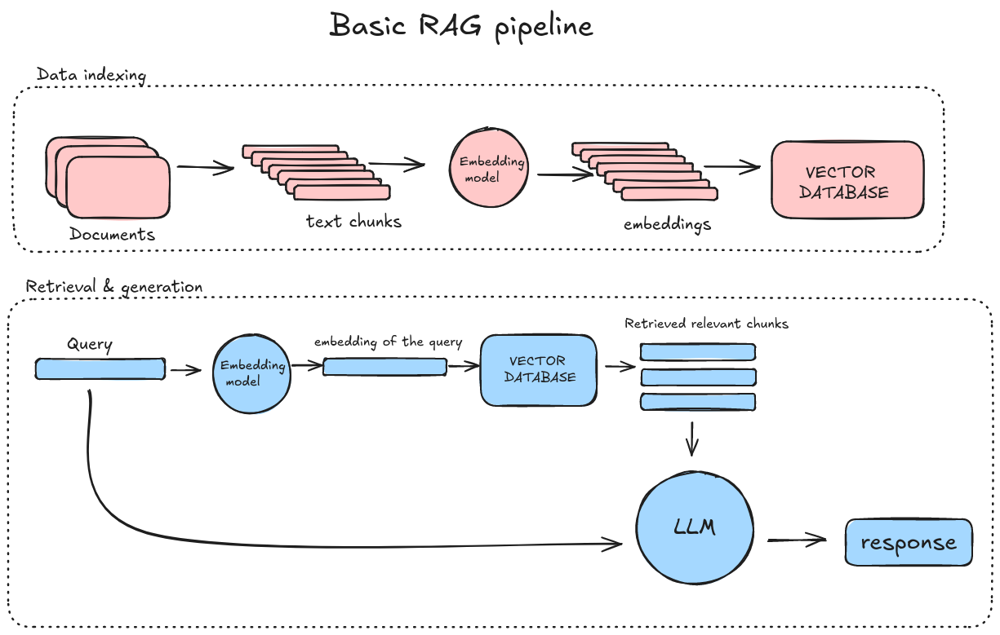

Simple Retrieval Augmented Generation (RAG) Example#
What is RAG?#
Retrieval Augmented Generation (RAG) is a technique that enhances LLM responses by retrieving relevant context from an external knowledge source before generating an answer. Instead of relying only on the model’s training data, RAG fetches real-time information to improve accuracy.
Data flow in RAG applications#
In RAG, data indexing is the process of organizing and storing large datasets in a structured way, making it easier to quickly search and retrieve relevant information. Retrieval involves querying the indexed data to find the most relevant documents or pieces of information for a given input or question. Generation refers to using the retrieved data to generate a coherent and contextually appropriate response, leveraging the information from the documents to enhance the accuracy and relevance of the output.

Steps in this exercise#
Chunk the text using embedding model: We begin by loading a sample document to use as our knowledge source. We’ll then split the document into smaller, manageable pieces (chunks) based on the embedding model’s context length. This is crucial because LLMs often have token limits, and chunking ensures that each piece of text can be processed effectively.
Create embeddings and store in a vector database: Next, we convert each chunk into a vector representation using a sentence embedding model. The resulting vectors capture the meaning of each text chunk. We then store these embeddings in a simple list that acts as our vector database.
Cosine similarity - find relevant text chunks: To retrieve the most relevant text, we encode the query using the same embedding model and then calculate the cosine similarity between the query’s vector and the vectors of the text chunks. The cosine similarity score helps us determine which text chunks are most similar to the query. The higher the score, the more relevant the chunk is.
Set up LLM and gerenate response with RAG: Finally, we pass the query and the retrieved context to an LLM (Large Language Model). The LLM will use the retrieved context to generate a more informed, accurate response. By combining retrieval with generation, we ensure the model has access to up-to-date or domain-specific information that might not have been part of its training data.
This exercise a simplified implementation of RAG, designed to help you understand the core logic behind the process. There are various ways to optimize and scale this process in real-world applications.
At the moment, it is not possible to create embeddings using the Python client provided by Aitta. However, we will use the Sentence Transformers library for creating embeddings. LLM usage is possible as in other exercises.
Let’s get started!
# Open the file "ai_factories.txt" in read mode to be used
with open("ai_factories.txt", "r", encoding="utf-8") as f:
text = f.read()
print(text[:500]) # Print first 500 characters to check the content
Choosing an embedding model#
For this example, we are using all-MiniLM-L6-v2, a small and efficient sentence transformer model.
It is lightweight and can run on CPUs, making it suitable for our current environment.
In the future, we could generate embeddings using Aitta API, which allows us to leverage GPU acceleration for faster processing.
Check model’s max_sequence_length & embeddings_dimension?#
Before chunking text, we need to understand the model’s constraints:
Max sequence length (also known as context length or max input tokens – The maximum number of tokens the model can process in a single pass.
Embedding dimension – The size of the vector (numerical representation) generated by the model for each input sentence.
Below, we initialize the model and check these properties.
from sentence_transformers import SentenceTransformer
# Load the embedding model
embedding_model = SentenceTransformer("sentence-transformers/all-MiniLM-L6-v2")
# Print model properties
print("Max Sequence Length:", embedding_model.max_seq_length) # Context length
print("Embedding Dimension:", embedding_model.get_sentence_embedding_dimension()) # Vector size
Chunking the text#
Since our embedding model has a maximum sequence length, we need to split the document into smaller, manageable chunks. This ensures that:
Each chunk fits within the model’s token limit for accurate embedding.
Sentences remain intact by splitting at logical points (e.g., periods, question marks).
Setting up the text splitter#
We use RecursiveCharacterTextSplitter from LangChain, with these parameters:
chunk_size→ Defines the maximum number of tokens per chunk.chunk_overlap→ Ensures that chunks share overlapping content to maintain continuity (if set to a value greater than 0)separators→ Defines where the text is split (e.g., at new paragraphs or punctuation).length_function→ Uses a tokenizer to count tokens instead of characters for accurate chunking. Without this, splitting is based on character count, which may lead to incorrect chunk sizes.
Next, we split the document into chunks and verify their correctness.
from langchain.text_splitter import RecursiveCharacterTextSplitter
from transformers import AutoTokenizer
# Load the tokenizer to count tokens accurately
tokenizer = AutoTokenizer.from_pretrained("sentence-transformers/all-MiniLM-L6-v2")
# Function to count tokens in a text chunk
def count_tokens(text):
return len(tokenizer.encode(text, add_special_tokens=False))
# Setting up the text splitter
text_splitter = RecursiveCharacterTextSplitter(
chunk_size=50, # Limit each chunk to 50 tokens (small for demonstration)
chunk_overlap=0, # No overlap between chunks in this case
length_function=count_tokens, # Use token-based counting instead of character count
separators=["\n\n", ". ", "? ", "! "] # Prioritize splitting at paragraph or sentence boundaries
)
# Split the document into smaller chunks
chunks = text_splitter.split_text(text)
# Display chunk statistics and example
print(f"Total chunks created: {len(chunks)}") # Show total number of chunks
print(f"Sample chunk:\n{chunks[0]}") # Print the first chunk as an example
print(f"Tokens in first chunk: {count_tokens(chunks[0])}") # Verify token count in the first chunk
# Uncomment to see tokens in the first chunk
# tokenizer.tokenize(chunks[0])
Initializing a simple vector database#
In this example, we use a simple vector database (a list stored in memory) to store the text chunks and their corresponding embeddings. Each text chunk is transformed into a vector representation using the embedding model. The initialized VECTOR_DB is a list of dictionaries, where each entry contains a text chunk and its corresponding embedding vector, enabling efficient retrieval and comparison of text data for the RAG process.
However, in real-world applications, it’s typically more efficient to use dedicated vector databases or indexing libraries like FAISS, which are optimized for storing and retrieving high-dimensional vectors. These libraries support fast similarity search, making them essential for handling large datasets.
# Initializing a simple vector database as a list
VECTOR_DB = []
# Iterate through the chunks of text, generate embeddings, and store them in the VECTOR_DB
for chunk in chunks:
embedding = embedding_model.encode(chunk) # Convert the text chunk into a vector representation
# Append the chunk and its corresponding embedding to the vector database
VECTOR_DB.append({"text": chunk, "embedding": embedding})
print(f"Stored {len(VECTOR_DB)} chunks in VECTOR_DB.") # Display the number of stored chunks
# Display a sample entry
sample_entry = VECTOR_DB[0]
embedding_sample = sample_entry["embedding"][:5]
text_sample = sample_entry["text"]
print(f"Sample entry:\nText: {text_sample}...")
print(f"Embedding (first 5 values): {embedding_sample}...")
Find relevant text chunks using cosine similarity#
To perform retrieval, we need to embed a query and then compare it to the stored vectors in the vector database. The goal is to find the most relevant text chunks based on the similarity between the query’s embedding and the embeddings stored in the vector database.
We will use Cosine Similarity to measure how similar the query’s embedding is to each of the stored embeddings.
Cosine Similarity measures the cosine of the angle between two non-zero vectors, which is a measure of similarity between them. The formula is:
Where:
A and B are the vectors to be compared.
The dot product A dot B is calculated by multiplying corresponding components of the vectors and summing the results.
The result is then divided by the product of the magnitudes of the vectors, A and B.
Cosine similarity ranges from -1 to 1:
1 means that the two vectors are identical (maximum similarity).
0 means that the two vectors are orthogonal (no similarity).
-1 means that the two vectors are diametrically opposite (maximum dissimilarity).
# https://huggingface.co/blog/ngxson/make-your-own-rag
def cosine_similarity(a, b):
dot_product = sum([x * y for x, y in zip(a, b)])
norm_a = sum([x ** 2 for x in a]) ** 0.5
norm_b = sum([x ** 2 for x in b]) ** 0.5
return dot_product / (norm_a * norm_b)
# Example query text
query_text = "What is the goal of AI factories in Europe?"
# Generate the embedding for the query
query_embedding = embedding_model.encode(query_text)
# Now, calculate the cosine similarity between the query embedding and each embedding in the VECTOR_DB
similarities = []
# Iterate over VECTOR_DB to calculate similarity with each stored chunk
for entry in VECTOR_DB:
stored_embedding = entry["embedding"]
# Calculate cosine similarity
similarity = cosine_similarity(query_embedding, stored_embedding)
similarities.append((entry["text"], similarity))
# Sort the results by similarity in descending order and show the most similar entries
similarities.sort(key=lambda x: x[1], reverse=True)
# Display the top 3 most similar chunks
print(f"Text and it's similarity to test query:\n")
for i in range(len(similarities)):
print(f"Similarity: {similarities[i][1]:.4f}")
print(f"Text: {similarities[i][0][:200]}...") # Display only first 200 characters of the text
print("#######")
# uncomment to check datatype of embeddings
#type(VECTOR_DB[0]['embedding'])
Using RAG with chat-model#
Let’s combine it all together to generate responses!
In this section, we are going to use the RAG technique to generate a meaningful and contextually aware answer to a user’s query. The process involves combining the power of embedding-based vector search with a chat-model LumiOpen/Poro-34B-chat to provide an informed response. We use a previously generated vector database.
Setting up the API client and model to use RAG#
We will configure the API client and load the LLM that will be used for generating responses within the RAG framework.
API Key Configuration and model loading
First, we configure the Aitta-client with an access token and API URL to authenticate and interact with the AI model. This setup allows us to securely communicate with the model and load the required resources.
OpenAI compatibility
Next, we set up the OpenAI client to point to the AI model’s OpenAI-compatible API endpoint. This enables us to send queries and receive responses through the OpenAI-compatible interface provided by Aitta.
After completing these setup steps, the model is ready to be used. We need to embedd the query, retrieve relevant text chunks and generate response using instuction prompt together with query and retrieved texts. We can then send queries along with the retrieved context to generate informed responses based on the retrieved knowledge.
Using RAG with chat-model#
Let’s combine it all together to generate responses!
In this section, we are going to use the RAG technique to generate a meaningful and contextually aware answer to a user’s query. The process involves combining the power of embedding-based vector search with a chat-model LumiOpen/Llama-Poro-2-70B-Instruct to provide an informed response. We use a previously generated vector database.
Setting up the API client and model to use RAG#
We will configure the API client and load the LLM that will be used for generating responses within the RAG framework.
API Key Configuration and model loading#
First, we configure the Aitta-client with an access token and API URL to authenticate and interact with the AI model. This setup ensures secure communication between the client and the model, allowing us to load the necessary resources for generating responses.
OpenAI compatibility#
Next, we set up the OpenAI client. This step enables us to send queries and receive responses through an OpenAI-compatibility provided by Aitta.
After completing these setup steps, the model is ready for use. We will then:
Embed the query: Convert the user’s query into a vector representation.
Retrieve relevant text chunks: Search the vector database for the most relevant chunks based on the query’s embedding.
Generate a response: Use the retrieved context, the query, and an instruction prompt to guide the model’s response generation.
# Set genereated access token here
access_token = "<obtain your access token from https://aitta.csc.fi/ and enter it here>"
import openai
from aitta_client import Model, Client, StaticAccessTokenSource
# configure Client instance with API URL and access token
token_source = StaticAccessTokenSource(access_token)
aitta_client = Client("https://aitta-api.csc.fi", token_source)
# load the LumiOpen/Poro-34B-chat model
poro_model = Model.load("LumiOpen/Llama-Poro-2-70B-Instruct", aitta_client)
print(poro_model.description)
# configure OpenAI client to use the Aitta OpenAI compatibility endpoints
client = openai.OpenAI(api_key=token_source.get_access_token(), base_url=poro_model.openai_api_url)
# https://huggingface.co/blog/ngxson/make-your-own-rag
def cosine_similarity(a, b):
dot_product = sum([x * y for x, y in zip(a, b)])
norm_a = sum([x ** 2 for x in a]) ** 0.5
norm_b = sum([x ** 2 for x in b]) ** 0.5
return dot_product / (norm_a * norm_b)
# Function to retrieve top N most relevant chunks using cosine similarity
def retrieve(query, top_n=2):
query_embedding = embedding_model.encode(query)
#print(type(query_embedding))
similarities = []
for entry in VECTOR_DB:
chunk = entry["text"]
embedding = entry["embedding"]
similarity = cosine_similarity(query_embedding, embedding)
similarities.append((chunk, similarity))
similarities.sort(key=lambda x: x[1], reverse=True)
return similarities[:top_n]
input_query = "What are AI factories?"
retrieved_knowledge = retrieve(input_query)
# UNCOMMENT lines below to see retrieved text chunks
#print('Retrieved knowledge:')
#for chunk, similarity in retrieved_knowledge:
# print(f' - (similarity: {similarity:.2f}) {chunk}')
# Format the context for the prompt
instruction_prompt = """
You are a helpful chatbot.
Use only the following pieces of context to answer the question. Don't make up any new information:
"""
# Add the chunks to instruction prompt
instruction_prompt += '\n'.join([f' - {chunk}' for chunk, similarity in retrieved_knowledge])
print(f"Instruction prompt: {instruction_prompt}")
# Call the OpenAI API to generate the response using the retrieved context
response = client.chat.completions.create(
messages=[
{
"role": "user",
"content": instruction_prompt + input_query
}
],
model=poro_model.id,
stream=False
)
# Display the answer
answer = response.choices[0].message.content
print("Answer:", answer)
Finally we can test how the model would have answered the query without using external data.
# Call the OpenAI API to generate the response using the retrieved context
response = client.chat.completions.create(
messages=[
{
"role": "user",
"content": input_query #Use ONLY input query
}
],
model=poro_model.id,
stream=False
)
# Display the answer
answer = response.choices[0].message.content
print("Answer:", answer)
Conclusion#
In this notebook, we covered the foundational steps of RAG. In real-world use cases, it’s essential to use optimized vector databases for efficient search and retrieval. This removes the need for manually coding search functions, like the cosine similarity example demonstrated earlier, where we computed similarities between vectors manually.
In contrast, using optimized libraries like FAISS abstracts away much of this complexity, allowing for faster and more scalable retrieval. In the next exercise, we’ll continue with a simple example, introducing FAISS to show how it enhances vector search and retrieval performance.
Next exercise: 08_simpleRAG-using-FAISS.ipynb